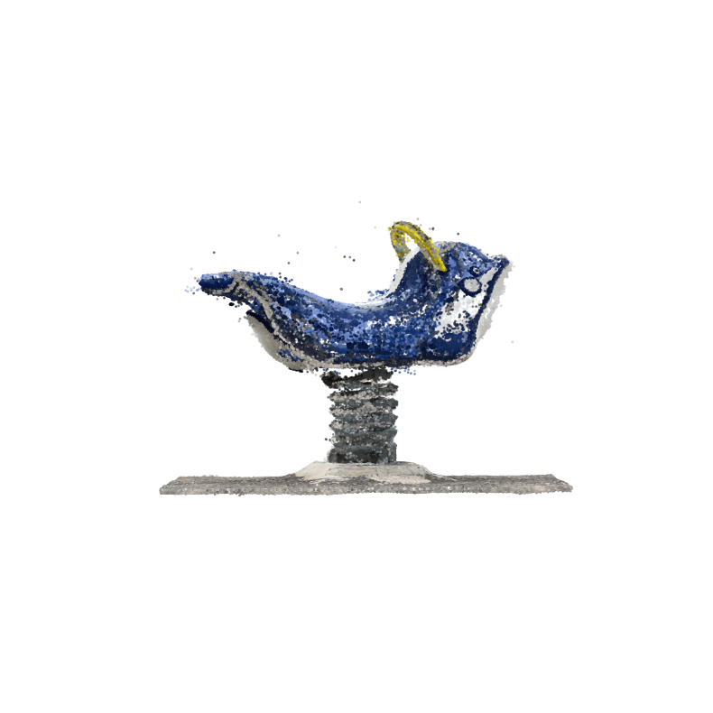

Open3Dをインストール。 インストール後にセッションを再起動してください。
[1]:
!pip install open3d
Collecting open3d
Downloading open3d-0.19.0-cp312-cp312-manylinux_2_31_x86_64.whl.metadata (4.3 kB)
Requirement already satisfied: numpy>=1.18.0 in /usr/local/lib/python3.12/dist-packages (from open3d) (2.0.2)
Collecting dash>=2.6.0 (from open3d)
Downloading dash-3.2.0-py3-none-any.whl.metadata (10 kB)
Requirement already satisfied: werkzeug>=3.0.0 in /usr/local/lib/python3.12/dist-packages (from open3d) (3.1.3)
Requirement already satisfied: flask>=3.0.0 in /usr/local/lib/python3.12/dist-packages (from open3d) (3.1.2)
Requirement already satisfied: nbformat>=5.7.0 in /usr/local/lib/python3.12/dist-packages (from open3d) (5.10.4)
Collecting configargparse (from open3d)
Downloading configargparse-1.7.1-py3-none-any.whl.metadata (24 kB)
Collecting ipywidgets>=8.0.4 (from open3d)
Downloading ipywidgets-8.1.7-py3-none-any.whl.metadata (2.4 kB)
Collecting addict (from open3d)
Downloading addict-2.4.0-py3-none-any.whl.metadata (1.0 kB)
Requirement already satisfied: pillow>=9.3.0 in /usr/local/lib/python3.12/dist-packages (from open3d) (11.3.0)
Requirement already satisfied: matplotlib>=3 in /usr/local/lib/python3.12/dist-packages (from open3d) (3.10.0)
Requirement already satisfied: pandas>=1.0 in /usr/local/lib/python3.12/dist-packages (from open3d) (2.2.2)
Requirement already satisfied: pyyaml>=5.4.1 in /usr/local/lib/python3.12/dist-packages (from open3d) (6.0.2)
Requirement already satisfied: scikit-learn>=0.21 in /usr/local/lib/python3.12/dist-packages (from open3d) (1.6.1)
Requirement already satisfied: tqdm in /usr/local/lib/python3.12/dist-packages (from open3d) (4.67.1)
Collecting pyquaternion (from open3d)
Downloading pyquaternion-0.9.9-py3-none-any.whl.metadata (1.4 kB)
Requirement already satisfied: plotly>=5.0.0 in /usr/local/lib/python3.12/dist-packages (from dash>=2.6.0->open3d) (5.24.1)
Requirement already satisfied: importlib-metadata in /usr/local/lib/python3.12/dist-packages (from dash>=2.6.0->open3d) (8.7.0)
Requirement already satisfied: typing-extensions>=4.1.1 in /usr/local/lib/python3.12/dist-packages (from dash>=2.6.0->open3d) (4.15.0)
Requirement already satisfied: requests in /usr/local/lib/python3.12/dist-packages (from dash>=2.6.0->open3d) (2.32.4)
Collecting retrying (from dash>=2.6.0->open3d)
Downloading retrying-1.4.2-py3-none-any.whl.metadata (5.5 kB)
Requirement already satisfied: nest-asyncio in /usr/local/lib/python3.12/dist-packages (from dash>=2.6.0->open3d) (1.6.0)
Requirement already satisfied: setuptools in /usr/local/lib/python3.12/dist-packages (from dash>=2.6.0->open3d) (75.2.0)
Requirement already satisfied: blinker>=1.9.0 in /usr/local/lib/python3.12/dist-packages (from flask>=3.0.0->open3d) (1.9.0)
Requirement already satisfied: click>=8.1.3 in /usr/local/lib/python3.12/dist-packages (from flask>=3.0.0->open3d) (8.2.1)
Requirement already satisfied: itsdangerous>=2.2.0 in /usr/local/lib/python3.12/dist-packages (from flask>=3.0.0->open3d) (2.2.0)
Requirement already satisfied: jinja2>=3.1.2 in /usr/local/lib/python3.12/dist-packages (from flask>=3.0.0->open3d) (3.1.6)
Requirement already satisfied: markupsafe>=2.1.1 in /usr/local/lib/python3.12/dist-packages (from flask>=3.0.0->open3d) (3.0.2)
Collecting comm>=0.1.3 (from ipywidgets>=8.0.4->open3d)
Downloading comm-0.2.3-py3-none-any.whl.metadata (3.7 kB)
Requirement already satisfied: ipython>=6.1.0 in /usr/local/lib/python3.12/dist-packages (from ipywidgets>=8.0.4->open3d) (7.34.0)
Requirement already satisfied: traitlets>=4.3.1 in /usr/local/lib/python3.12/dist-packages (from ipywidgets>=8.0.4->open3d) (5.7.1)
Collecting widgetsnbextension~=4.0.14 (from ipywidgets>=8.0.4->open3d)
Downloading widgetsnbextension-4.0.14-py3-none-any.whl.metadata (1.6 kB)
Requirement already satisfied: jupyterlab_widgets~=3.0.15 in /usr/local/lib/python3.12/dist-packages (from ipywidgets>=8.0.4->open3d) (3.0.15)
Requirement already satisfied: contourpy>=1.0.1 in /usr/local/lib/python3.12/dist-packages (from matplotlib>=3->open3d) (1.3.3)
Requirement already satisfied: cycler>=0.10 in /usr/local/lib/python3.12/dist-packages (from matplotlib>=3->open3d) (0.12.1)
Requirement already satisfied: fonttools>=4.22.0 in /usr/local/lib/python3.12/dist-packages (from matplotlib>=3->open3d) (4.59.1)
Requirement already satisfied: kiwisolver>=1.3.1 in /usr/local/lib/python3.12/dist-packages (from matplotlib>=3->open3d) (1.4.9)
Requirement already satisfied: packaging>=20.0 in /usr/local/lib/python3.12/dist-packages (from matplotlib>=3->open3d) (25.0)
Requirement already satisfied: pyparsing>=2.3.1 in /usr/local/lib/python3.12/dist-packages (from matplotlib>=3->open3d) (3.2.3)
Requirement already satisfied: python-dateutil>=2.7 in /usr/local/lib/python3.12/dist-packages (from matplotlib>=3->open3d) (2.9.0.post0)
Requirement already satisfied: fastjsonschema>=2.15 in /usr/local/lib/python3.12/dist-packages (from nbformat>=5.7.0->open3d) (2.21.2)
Requirement already satisfied: jsonschema>=2.6 in /usr/local/lib/python3.12/dist-packages (from nbformat>=5.7.0->open3d) (4.25.1)
Requirement already satisfied: jupyter-core!=5.0.*,>=4.12 in /usr/local/lib/python3.12/dist-packages (from nbformat>=5.7.0->open3d) (5.8.1)
Requirement already satisfied: pytz>=2020.1 in /usr/local/lib/python3.12/dist-packages (from pandas>=1.0->open3d) (2025.2)
Requirement already satisfied: tzdata>=2022.7 in /usr/local/lib/python3.12/dist-packages (from pandas>=1.0->open3d) (2025.2)
Requirement already satisfied: scipy>=1.6.0 in /usr/local/lib/python3.12/dist-packages (from scikit-learn>=0.21->open3d) (1.16.1)
Requirement already satisfied: joblib>=1.2.0 in /usr/local/lib/python3.12/dist-packages (from scikit-learn>=0.21->open3d) (1.5.1)
Requirement already satisfied: threadpoolctl>=3.1.0 in /usr/local/lib/python3.12/dist-packages (from scikit-learn>=0.21->open3d) (3.6.0)
Collecting jedi>=0.16 (from ipython>=6.1.0->ipywidgets>=8.0.4->open3d)
Downloading jedi-0.19.2-py2.py3-none-any.whl.metadata (22 kB)
Requirement already satisfied: decorator in /usr/local/lib/python3.12/dist-packages (from ipython>=6.1.0->ipywidgets>=8.0.4->open3d) (4.4.2)
Requirement already satisfied: pickleshare in /usr/local/lib/python3.12/dist-packages (from ipython>=6.1.0->ipywidgets>=8.0.4->open3d) (0.7.5)
Requirement already satisfied: prompt-toolkit!=3.0.0,!=3.0.1,<3.1.0,>=2.0.0 in /usr/local/lib/python3.12/dist-packages (from ipython>=6.1.0->ipywidgets>=8.0.4->open3d) (3.0.51)
Requirement already satisfied: pygments in /usr/local/lib/python3.12/dist-packages (from ipython>=6.1.0->ipywidgets>=8.0.4->open3d) (2.19.2)
Requirement already satisfied: backcall in /usr/local/lib/python3.12/dist-packages (from ipython>=6.1.0->ipywidgets>=8.0.4->open3d) (0.2.0)
Requirement already satisfied: matplotlib-inline in /usr/local/lib/python3.12/dist-packages (from ipython>=6.1.0->ipywidgets>=8.0.4->open3d) (0.1.7)
Requirement already satisfied: pexpect>4.3 in /usr/local/lib/python3.12/dist-packages (from ipython>=6.1.0->ipywidgets>=8.0.4->open3d) (4.9.0)
Requirement already satisfied: attrs>=22.2.0 in /usr/local/lib/python3.12/dist-packages (from jsonschema>=2.6->nbformat>=5.7.0->open3d) (25.3.0)
Requirement already satisfied: jsonschema-specifications>=2023.03.6 in /usr/local/lib/python3.12/dist-packages (from jsonschema>=2.6->nbformat>=5.7.0->open3d) (2025.4.1)
Requirement already satisfied: referencing>=0.28.4 in /usr/local/lib/python3.12/dist-packages (from jsonschema>=2.6->nbformat>=5.7.0->open3d) (0.36.2)
Requirement already satisfied: rpds-py>=0.7.1 in /usr/local/lib/python3.12/dist-packages (from jsonschema>=2.6->nbformat>=5.7.0->open3d) (0.27.0)
Requirement already satisfied: platformdirs>=2.5 in /usr/local/lib/python3.12/dist-packages (from jupyter-core!=5.0.*,>=4.12->nbformat>=5.7.0->open3d) (4.3.8)
Requirement already satisfied: tenacity>=6.2.0 in /usr/local/lib/python3.12/dist-packages (from plotly>=5.0.0->dash>=2.6.0->open3d) (8.5.0)
Requirement already satisfied: six>=1.5 in /usr/local/lib/python3.12/dist-packages (from python-dateutil>=2.7->matplotlib>=3->open3d) (1.17.0)
Requirement already satisfied: zipp>=3.20 in /usr/local/lib/python3.12/dist-packages (from importlib-metadata->dash>=2.6.0->open3d) (3.23.0)
Requirement already satisfied: charset_normalizer<4,>=2 in /usr/local/lib/python3.12/dist-packages (from requests->dash>=2.6.0->open3d) (3.4.3)
Requirement already satisfied: idna<4,>=2.5 in /usr/local/lib/python3.12/dist-packages (from requests->dash>=2.6.0->open3d) (3.10)
Requirement already satisfied: urllib3<3,>=1.21.1 in /usr/local/lib/python3.12/dist-packages (from requests->dash>=2.6.0->open3d) (2.5.0)
Requirement already satisfied: certifi>=2017.4.17 in /usr/local/lib/python3.12/dist-packages (from requests->dash>=2.6.0->open3d) (2025.8.3)
Requirement already satisfied: parso<0.9.0,>=0.8.4 in /usr/local/lib/python3.12/dist-packages (from jedi>=0.16->ipython>=6.1.0->ipywidgets>=8.0.4->open3d) (0.8.5)
Requirement already satisfied: ptyprocess>=0.5 in /usr/local/lib/python3.12/dist-packages (from pexpect>4.3->ipython>=6.1.0->ipywidgets>=8.0.4->open3d) (0.7.0)
Requirement already satisfied: wcwidth in /usr/local/lib/python3.12/dist-packages (from prompt-toolkit!=3.0.0,!=3.0.1,<3.1.0,>=2.0.0->ipython>=6.1.0->ipywidgets>=8.0.4->open3d) (0.2.13)
Downloading open3d-0.19.0-cp312-cp312-manylinux_2_31_x86_64.whl (447.7 MB)
━━━━━━━━━━━━━━━━━━━━━━━━━━━━━━━━━━━━━━━━ 447.7/447.7 MB 4.0 MB/s eta 0:00:00
Downloading dash-3.2.0-py3-none-any.whl (7.9 MB)
━━━━━━━━━━━━━━━━━━━━━━━━━━━━━━━━━━━━━━━━ 7.9/7.9 MB 22.0 MB/s eta 0:00:00
Downloading ipywidgets-8.1.7-py3-none-any.whl (139 kB)
━━━━━━━━━━━━━━━━━━━━━━━━━━━━━━━━━━━━━━━━ 139.8/139.8 kB 15.9 MB/s eta 0:00:00
Downloading addict-2.4.0-py3-none-any.whl (3.8 kB)
Downloading configargparse-1.7.1-py3-none-any.whl (25 kB)
Downloading pyquaternion-0.9.9-py3-none-any.whl (14 kB)
Downloading comm-0.2.3-py3-none-any.whl (7.3 kB)
Downloading widgetsnbextension-4.0.14-py3-none-any.whl (2.2 MB)
━━━━━━━━━━━━━━━━━━━━━━━━━━━━━━━━━━━━━━━━ 2.2/2.2 MB 103.2 MB/s eta 0:00:00
Downloading retrying-1.4.2-py3-none-any.whl (10 kB)
Downloading jedi-0.19.2-py2.py3-none-any.whl (1.6 MB)
━━━━━━━━━━━━━━━━━━━━━━━━━━━━━━━━━━━━━━━━ 1.6/1.6 MB 81.5 MB/s eta 0:00:00
Installing collected packages: addict, widgetsnbextension, retrying, pyquaternion, jedi, configargparse, comm, ipywidgets, dash, open3d
Attempting uninstall: widgetsnbextension
Found existing installation: widgetsnbextension 3.6.10
Uninstalling widgetsnbextension-3.6.10:
Successfully uninstalled widgetsnbextension-3.6.10
Attempting uninstall: ipywidgets
Found existing installation: ipywidgets 7.7.1
Uninstalling ipywidgets-7.7.1:
Successfully uninstalled ipywidgets-7.7.1
Successfully installed addict-2.4.0 comm-0.2.3 configargparse-1.7.1 dash-3.2.0 ipywidgets-8.1.7 jedi-0.19.2 open3d-0.19.0 pyquaternion-0.9.9 retrying-1.4.2 widgetsnbextension-4.0.14
Googleドライブをマウントします
[1]:
from google.colab import drive
drive.mount('/content/drive')
Mounted at /content/drive
[2]:
# Open3DとNumpyをインポートします
import open3d as o3d
import numpy as np
点群データ（PLYファイル）をOpen3DとMatplotlibで可視化
[3]:
# 点群ファイル（PLY）読み込み
cloud = o3d.io.read_point_cloud("/content/drive/MyDrive/Colab Notebooks/3d/02/image_in/iruka.ply")
if cloud.is_empty(): exit()
# 読み込んだデータを確認します
print(cloud)
print(np.asarray(cloud.points))
PointCloud with 570911 points.
[[-0.49188578 0.52052921 0.01525302]
[-0.49332249 0.50989765 0.01295437]
[-0.4970578 0.51880497 0.01582769]
...
[ 0.543944 -0.52938133 0.02186164]
[ 0.54135811 -0.52535874 0.02387297]
[ 0.54308188 -0.52823216 0.02301097]]
[4]:
# Matplotlibで点群ファイルを表示します
import matplotlib.pyplot as plt
from mpl_toolkits import mplot3d
[5]:
# 点群データをnp.array形式に変換します
points = np.asarray(cloud.points)
[6]:
# 色データをnp.array形式に変換します
colors = np.asarray(cloud.colors)
print(colors)
[[0.58823529 0.57254902 0.55686275]
[0.63529412 0.63529412 0.61960784]
[0.60392157 0.60392157 0.57254902]
...
[0.61960784 0.60392157 0.57254902]
[0.80784314 0.79215686 0.76078431]
[0.72941176 0.71372549 0.69803922]]
[7]:
# 表示サイズを指定
import matplotlib.pyplot as plt
from matplotlib.pyplot import figure
plt.rcParams["figure.figsize"] = [10,10] # 図の幅と高さをインチで指定する
[8]:
# Matplotlibで表示
ax = plt.axes(projection='3d')
ax.view_init(elev=0, azim=0)
ax.axis("off")
ax.scatter(points[:,0], points[:,1], points[:,2], s=1, c=colors)
plt.show()

[9]:
# 軸の仰角と方位を変更
ax = plt.axes(projection='3d')
ax.view_init(elev=90, azim=-45) # 軸の仰角と方位を（ラジアンではなく）度単位で設定
ax.axis("off")
ax.scatter(points[:,0], points[:,1], points[:,2], s=1, c=colors)
plt.show()
メッシュデータ（OBJファイル）をOpen3dとPlotlyで可視化
[10]:
# メッシュタイプ（OBJファイル）のデータを読み込み
mesh = o3d.io.read_triangle_mesh("/content/drive/MyDrive/Colab Notebooks/3d/02/image_in/iruka.obj")
if mesh.is_empty(): exit()
[11]:
# 法線を計算
mesh.compute_vertex_normals() # 頂点の法線を計算
mesh.compute_triangle_normals() # 三角形の法線を計算
[11]:
TriangleMesh with 58260 points and 102006 triangles.
[12]:
# 頂点と三角形のデータをnp.array形式に変換
triangles = np.asarray(mesh.triangles)
vertices = np.asarray(mesh.vertices)
# 色を設定
colors = (0.5, 0.5, 0.5) + np.asarray(mesh.triangle_normals) * 0.5 # 三角形の法線データで色を変化させる
colors = tuple(map(tuple, colors))
[13]:
# Plotlyをインストール
!pip install plotly
Requirement already satisfied: plotly in /usr/local/lib/python3.12/dist-packages (5.24.1)
Requirement already satisfied: tenacity>=6.2.0 in /usr/local/lib/python3.12/dist-packages (from plotly) (8.5.0)
Requirement already satisfied: packaging in /usr/local/lib/python3.12/dist-packages (from plotly) (25.0)
[14]:
# Plotlyをインポート
import plotly.graph_objects as graph_objects
[ ]:
# Plotlyで表示。出力結果はマウスでインタラクティブに動かすことが可能です
fig = graph_objects.Figure(
data=[
graph_objects.Mesh3d(
x=vertices[:,0], # 頂点のX座標
y=vertices[:,1], # 頂点のY座標
z=vertices[:,2], # 頂点のZ座標
i=triangles[:,0], # 三角形の1番目の座標
j=triangles[:,1], # 三角形の2番目の座標
k=triangles[:,2], # 三角形の3番目の座標
facecolor=colors, # 面の色を設定
opacity=0.50) # 表面の不透明度を設定
],
layout=dict(
scene=dict(
xaxis=dict(visible=False), # X軸非表示
yaxis=dict(visible=False), # Y軸非表示
zaxis=dict(visible=False) # Z軸非表示
)
)
)
fig.show() # 表示